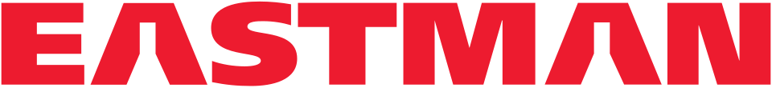

Eastman Chemical Company
Eastman Chemical Company는 미국 테네시주 킹스포트에 본사를 둔 화학 제품 제조업체이다. 첨단 소재, 화학 제품, 섬유를 생산하는 글로벌 특수 소재 기업이다.
최종 업데이트

Eastman Chemical Company는 어떤 브랜드인가
Eastman은 미국의 화학 제품 제조업체로, 일상용 소재에 쓰이는 폭넓은 첨단 소재, 화학 제품, 섬유를 생산한다. 화학 제품, 섬유, 플라스틱을 제조하고 판매하며, 코팅·접착제·특수 플라스틱 제품을 공급한다.
셀룰로스 아세테이트 섬유의 주요 공급업체이며 포장용 코폴리에스터도 생산한다. 전 세계 36개 제조 현장을 운영하고 약 14,000명을 고용하며, 2023년 매출은 약 $9.21 billion이었다.
1920년 설립되어 1994년까지 Kodak의 자회사였고, 현재는 독립적인 글로벌 특수 소재 기업이다. 사업은 Additives & Functional Products, Advanced Materials, Chemical Intermediates, Fibers의 네 개 부문으로 관리·보고된다.
Eastman Chemical Company는 어떻게 시작되고 성장했나
제1차 세계대전의 영향으로 사진용 종이, 광학 유리, 젤라틴, 메탄올·아세트산·아세톤 같은 여러 화학 물질의 원료가 부족해졌다. 전쟁이 끝난 뒤 Eastman Kodak의 창업자 George Eastman은 자사 사진 공정에 쓸 화학 물질의 독립적인 공급원을 마련하려 했고, 메탄올과 아세톤을 찾다가 미국 남부에 이르렀다.
1920년 George Eastman이 Tennessee Eastman을 설립했으며, 유기 화학 제품과 아세틸이 두 개의 주요 기반이었다. 이 회사는 1994년 Eastman Kodak에서 분사되어 독립 기업이 되었다.
2005년 초에는 PET 수지 생산의 중간 공정 단계를 줄이는 IntegRex 기술을 이용한 첫 세계적 규모의 제조 시설 공사에 착수했다.
Eastman Chemical Company의 브랜드 아이덴티티는 무엇인가
Eastman Kodak의 화학 물질 공급원 확보를 위해 1920년 설립되어 1994년 독립한, 킹스포트 기반의 특수 소재 제조업체이다.
Eastman Chemical Company의 대표 제품과 서비스는 무엇인가
Additives & Functional Products 부문은 코팅과 타이어 산업용 화학 제품과 접착 수지를 만든다. Advanced Materials 부문은 특수 코폴리에스터, 셀룰로스 에스터, 인터레이어, 애프터마켓 윈도 필름을 생산하고 판매한다.
Chemical Intermediates 부문은 acetyl, olefins, alkylamine 계열의 대규모 수직 계열화와 독자 제조 기술을 활용해 제품을 만들며, 외부에 판매하는 동시에 다른 부문에서도 사용한다. Fibers 부문은 주로 담배 필터 제조에 쓰이는 Estron acetate tow와 Estrobond triacetin 가소제, 의류·가정용 섬유·산업용 직물에 쓰이는 Estron natural 및 Chromspun 아세테이트 원사를 판매한다.
Eastman Chemical Company는 지금 어떤 상태인가
1994년 Eastman Kodak에서 분사된 뒤 독립 기업으로 운영되며, 일상용 첨단 소재, 화학 제품, 섬유를 폭넓게 생산하는 글로벌 특수 소재 기업이다. 전 세계 36개 제조 현장을 운영하며 약 14,000명의 직원을 고용하고 있다.
2023년 매출은 약 $9.21 billion이었다. 본사는 미국 테네시주 킹스포트에 있으며, 사업은 네 개 부문으로 관리·보고된다.
Eastman Chemical Company 로고는 어떻게 변해왔나
자주 묻는 질문
Eastman Chemical Company는 어느 나라 브랜드인가요?
Eastman Chemical Company는 미국의 에너지·산업재 브랜드입니다.
Eastman Chemical Company는 언제 설립되었나요?
Eastman Chemical Company는 1920년 설립되었습니다.
Eastman Chemical Company의 브랜드 아이덴티티는 무엇인가요?
Eastman Kodak의 화학 물질 공급원 확보를 위해 1920년 설립되어 1994년 독립한, 킹스포트 기반의 특수 소재 제조업체이다.
Eastman Chemical Company의 대표 제품은 무엇인가요?
Additives & Functional Products 부문은 코팅과 타이어 산업용 화학 제품과 접착 수지를 만든다.
Eastman Chemical Company는 어느 기업이 소유하고 있나요?
1994년 Eastman Kodak에서 분사된 뒤 독립 기업으로 운영되며, 일상용 첨단 소재, 화학 제품, 섬유를 폭넓게 생산하는 글로벌 특수 소재 기업이다.
Eastman Chemical Company의 창업자는 누구인가요?
Eastman Chemical Company의 창업자는 조지 이스트먼입니다(위키데이터 기준).
Eastman Chemical Company의 본사는 어디에 있나요?
Eastman Chemical Company의 본사는 킹스포트에 있습니다(위키데이터 기준).
출처와 검증
Eastman Chemical Company 관련 참고: 공식 웹사이트 · 위키데이터 Q899022 · 영어 위키백과. 브랜드명은 한글과 원어를 함께 표기하되 데이터에 없는 표기는 만들지 않습니다. 기원 국가·설립연도는 검수된 정의문에서 확인된 값을 우선하고, 없을 때만 공식 웹사이트 URL이 일치하는 위키데이터 개체의 값을 씁니다. 위키데이터 값은 2026-11-15 기준입니다.